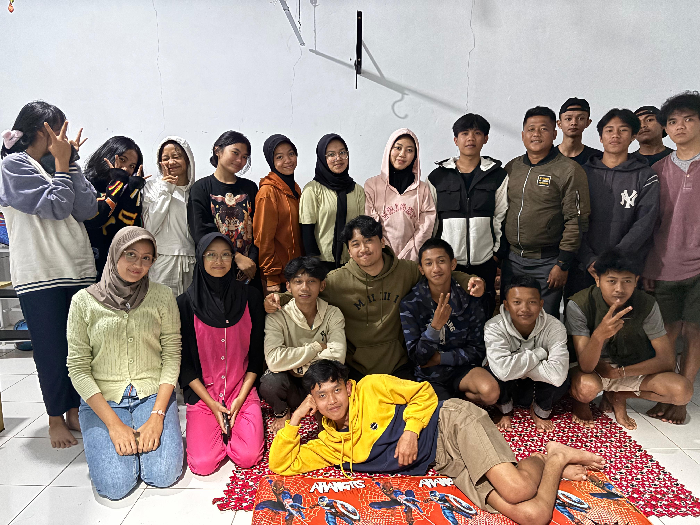
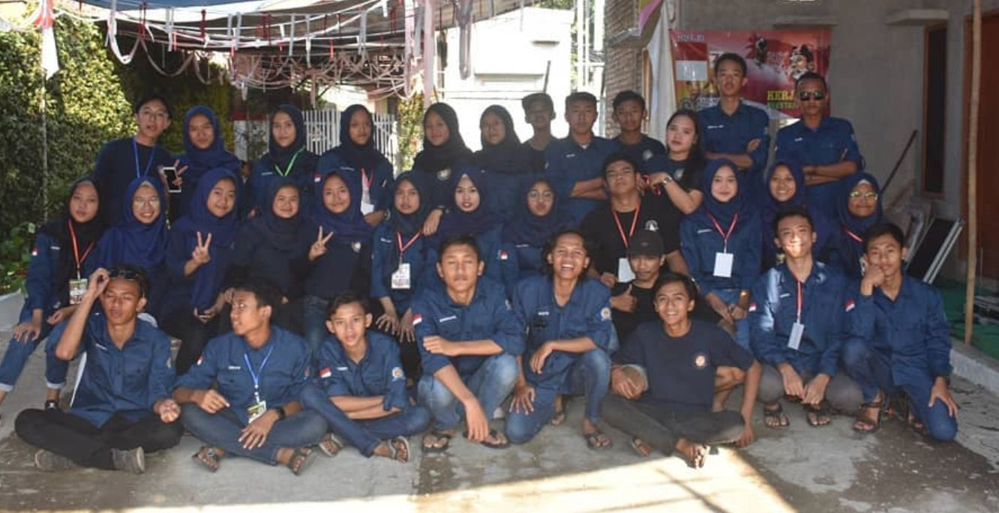
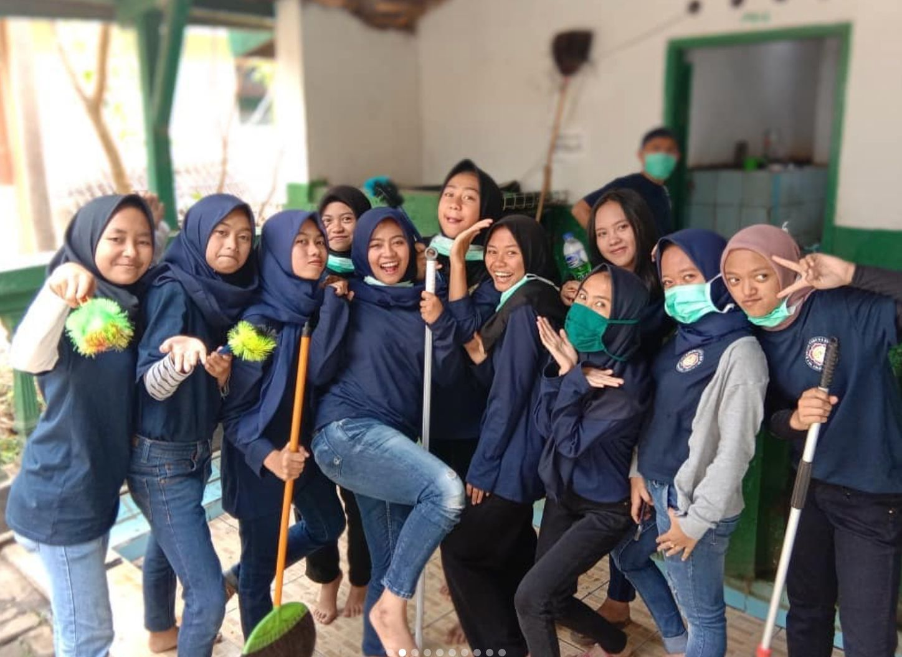

Kegiatan Kami
Rangkuman kegiatan dan program yang telah kami laksanakan

Buka Bersama Pemuda & Pemudi Hebat SABANUSA
Kegiatan buka puasa bersama seluruh anggota SABANUSA sebagai ajang mempererat tali silaturahmi dan kebersamaan.

Camping Bersama Pemuda Pemudi SABANUSA
Kegiatan camping bersama sebagai sarana membangun kekompakan, kepercayaan diri, dan jiwa kepemimpinan anggota.

Kedatangan Tamu Ketua & Wakil Karang Taruna Desa
Kunjungan silaturahmi dari Ketua dan Wakil Karang Taruna tingkat desa sebagai bentuk koordinasi dan sinergi organisasi.

Panitia Lomba 17 Agustus
SABANUSA berperan aktif sebagai panitia penyelenggara lomba dalam rangka memperingati Hari Kemerdekaan Republik Indonesia.

Berbagi Sembako kepada Warga RW 03 Desa Cikalong
Kegiatan sosial berbagi paket sembako kepada warga yang membutuhkan sebagai wujud kepedulian SABANUSA kepada masyarakat.

Penyemprotan Disinfektan — Pencegahan COVID-19
Kegiatan penyemprotan disinfektan di lingkungan RW 03 sebagai upaya pencegahan dan penanggulangan penyebaran COVID-19.

Acara Kesenian Sunda
Penampilan seni budaya Sunda sebagai upaya melestarikan kekayaan budaya lokal di kalangan generasi muda.

Buka Bersama Pemuda Pemudi SABANUSA
Kegiatan buka puasa bersama yang mempererat keakraban dan semangat kebersamaan seluruh anggota SABANUSA.

KKN UIN × Karang Taruna SABANUSA
Kolaborasi mahasiswa KKN UIN dengan SABANUSA dalam program pengabdian masyarakat di lingkungan RW 03 Desa Cikalong.

Kerja Bakti Bersih-Bersih Masjid
Kegiatan gotong royong membersihkan masjid bersama warga sebagai wujud kepedulian terhadap tempat ibadah dan lingkungan sekitar.

Festival Pawai 17 Agustus 2018
Partisipasi SABANUSA dalam festival pawai peringatan Hari Kemerdekaan RI ke-73 sebagai bentuk semangat nasionalisme pemuda.